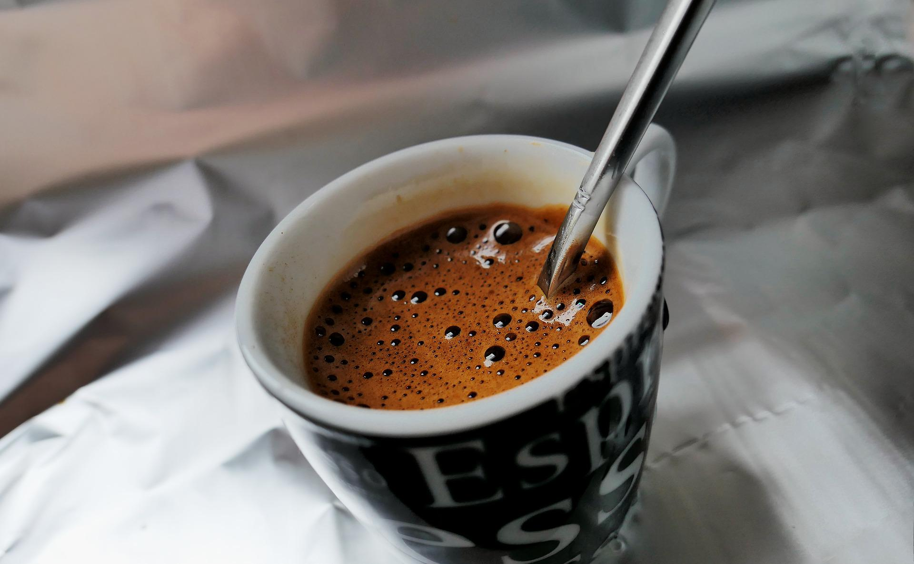

Home
Menue
About
Coffee is a consolation !
Coffee is a drink prepared from oasted coffee beans made from seeds of Coffea plant speciest. and is one of the most popular drinks in the world.
Sing Up
Some information

Espresso is luxuriously creamy, with a kiss of foamy crema and a lingering aftertaste
Cappucino has a bold coffee taste and some sweetness from the naturally occurring lactose sugar in milk
Fat tastes good. It feels good. It makes flavours linger. Real cream will also dilute the acidity of coffee, which sometimes is desirable
the greatest of all time in summer
“As long as there was coffee in the world, how bad could things be?”
- Cassandra Clare, City of Ashes
call to action
you need coffee early in your day, call us to bring it or whatever hhahaha !
sing up